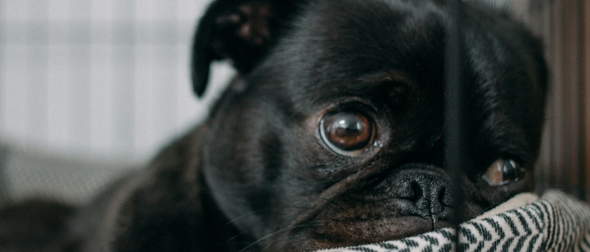

Bine ați venit pe site-ul oficial al Adăpostul de Câini "Hope for Paws"! Misiunea noastră este să oferim un adăpost temporar și iubitor câinilor fără stăpân, să-i reabilităm și să le găsim cămine permanente și iubitoare. Ne dedicăm timp și resurse pentru a asigura că fiecare câine are parte de îngrijirea medicală necesară, antrenament comportamental și, cel mai important, afecțiune și atenție. În cadrul adăpostului nostru, fiecare câine este evaluat individual pentru a-i înțelege nevoile specifice, iar voluntarii noștri dedicați lucrează neîncetat pentru a le oferi o viață cât mai bună pe durata șederii lor. Organizăm diverse evenimente de adopție și campanii de sensibilizare pentru a implica comunitatea și a promova adopția responsabilă. Vă invităm să explorați site-ul nostru pentru a descoperi mai multe despre programele noastre, poveștile de succes ale câinilor adoptați și cum puteți ajuta, fie prin donații, voluntariat sau adoptând un prieten blănos. Împreună putem face o diferență și putem oferi acestor câini o șansă la o viață fericită și sigură.


Secțiunea de îngrijire reprezintă inima activității din adăpostul nostru, asigurând bunăstarea și sănătatea fiecărui cățel. Aici, echipa noastră dedicată se ocupă zilnic de hrănirea, curățenia și monitorizarea stării de sănătate a câinilor.
Secțiunea de tratament este locul unde sănătatea și recuperarea câinilor noștri devin prioritatea absolută. Aici, fiecare patruped primește atenția și îngrijirile medicale necesare, fie că este vorba despre tratamente de rutină sau intervenții mai complexe.
Descoperiți câinii noștri adorabili care sunt gata să-și găsească un cămin permanent. Fiecare câine este evaluat și îngrijit cu atenție de echipa noastră.


Vârstă: 1 an
Gen: Feminin
Stare de sănătate: Sterilizată
Lady este o cățelușă plină de viață, cu o inteligență remarcabilă și o personalitate adorabilă. Este partenerul perfect pentru iubitorii de natură, fiind mereu pregătită pentru aventuri și momente speciale petrecute alături de familie. Cu blana sa densă și rezistentă la apă, Lady este ideală pentru activități în aer liber.
DisponibilVârstă: 2 ani
Gen: Masculin
Stare de sănătate: Vaccinat și Sterilizat
Max este un bulldog adorabil și plin de viață, o sursă nesfârșită de afecțiune și veselie. Este companionul perfect pentru cei care își doresc un prieten loial și jucăuș. Cu o personalitate blândă și iubitoare, Max este întotdeauna pregătit să îți aducă zâmbetul pe buze. Aspectul său unic și firea sociabilă îl fac un câine de neuitat.
Ofertă specială
Vârstă: 3 ani
Gen: Masculin
Stare de sănătate: Vaccinat
Aldo este un Bichon Havanez adorabil, care emană fericire și afecțiune la fiecare pas. Cu personalitatea sa plină de viață și aspectul fermecător, Aldo este partenerul perfect pentru oricine își dorește un cățeluș loial și iubitor. Blana sa mătăsoasă și ochii expresivi îl fac o prezență inconfundabilă, aducând bucurie în orice casă.
DisponibilAcceptăm donații de hrană uscată sau umedă pentru câini. Puteți dona direct la adăpostul nostru sau prin partenerii noștri Pedigree.
Paturi, cuști, lese și jucării sunt mereu necesare pentru câinii noștri. Dacă aveți accesorii pe care nu le mai folosiți, le puteți aduce la adăpost.